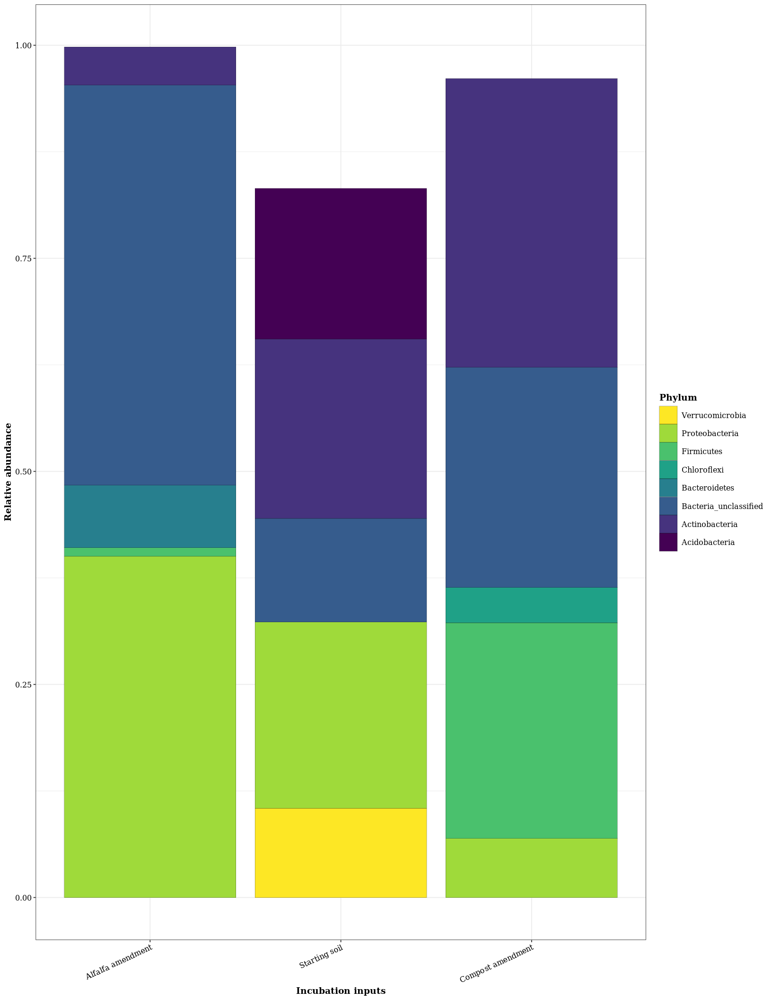

Relative abundance of phyla in microcosm input ingredients
knitr::opts_knit$set(root.dir = normalizePath("."))## Loading required package: permute## Loading required package: lattice## This is vegan 2.5-6## ── Attaching packages ───────────────────── tidyverse 1.3.0 ──## ✓ ggplot2 3.2.1 ✓ purrr 0.3.3
## ✓ tibble 2.1.3 ✓ dplyr 0.8.3
## ✓ tidyr 1.0.0 ✓ stringr 1.4.0
## ✓ readr 1.3.1 ✓ forcats 0.4.0## ── Conflicts ──────────────────────── tidyverse_conflicts() ──
## x dplyr::filter() masks stats::filter()
## x dplyr::lag() masks stats::lag()## Loading required package: viridisLite##
## Attaching package: 'kableExtra'## The following object is masked from 'package:dplyr':
##
## group_rowsRelative abundance bar plots for the incubation inputs
tps = inc.inputs
#Let's check some of the of taxa counts from theses samples
# Minimum sample size
min(taxa_sums(otu_table(tps)))## [1] 0## [1] 2tps <- rarefy_even_depth(tps, rngseed = 423423423) %>%
filter_taxa(function(x) sum(x) >= 2, T)## `set.seed(423423423)` was used to initialize repeatable random subsampling.## Please record this for your records so others can reproduce.## Try `set.seed(423423423); .Random.seed` for the full vector## ...## 1289OTUs were removed because they are no longer
## present in any sample after random subsampling## ...sample_sums(tps)## 2mm.dry.alfalfa.plant2 2mm.dry.alfalfa.plant3 2mm.dry.alfalfa.plant4
## 4007 4002 3998
## 2mm.dry.alfalfa.plant5 2mm.dry.alfalfa.plant6 2mm.dry.alfalfa.plant7
## 4012 3996 3997
## 2mm.dry.alfalfa.soil 2mm.dry.compost2 2mm.dry.compost3
## 3467 3953 3969
## 2mm.dry.compost4 2mm.dry.compost5 2mm.dry.compost6
## 3972 3958 3976
## 2mm.dry.compost7
## 3959physeq.dist <- ordinate(tps, "PCoA", "bray")
p1 <- plot_ordination(tps, physeq.dist, type = "samples", color = "treatment") +
geom_point(size=4) +
scale_color_viridis(discrete = T, option = "viridis") + ggplot2::theme_bw()
p1
#Stats for input.PCoA
dist <- phyloseq::distance(tps, method = "bray")
input.PCoA.stats <- adonis(dist ~ treatment, data = data.frame(sample_data(tps)))
kable(input.PCoA.stats$aov.tab, align = "c", format = "html", digits = 3)| Df | SumsOfSqs | MeanSqs | F.Model | R2 | Pr(>F) | |
|---|---|---|---|---|---|---|
| treatment | 2 | 3.533 | 1.767 | 84.41 | 0.944 | 0.001 |
| Residuals | 10 | 0.209 | 0.021 | NA | 0.056 | NA |
| Total | 12 | 3.743 | NA | NA | 1.000 | NA |
# Relative Abundance in inputs
# Put phyloseq object into a df with .02% phylum (glomed at phylum level)
RelativeAbundanceDf <- function(physeq) {
physeq %>% tax_glom(taxrank = "Phylum") %>%
transform_sample_counts(function(x) {x/sum(x)}) %>%
psmelt() %>%
arrange(Phylum)
}
treatment_names <- c(
"AlfalfaAmend" = "Alfalfa amendment",
"AlfalfaSoil" = "Starting soil",
"CompostAmend" = "Compost amendment")
# Function to plot relative abundance
PlotRelativeAbundance <- function(df) {
ggplot(df, aes(x = as.factor(Sample), y = Abundance, fill = Phylum)) +
geom_bar(stat = "identity", color = "black", size = 0.05) +
theme(axis.title.x = element_blank()) +
guides(fill = guide_legend(reverse = TRUE, keywidth = 1, keyheight = 1)) +
ylab("Relative abundance") +
xlab("Incubation inputs") +
scale_fill_viridis_d()
}
tps.merged <- merge_samples(tps, "treatment")
sample_data(tps.merged)$treatment <- levels(sample_data(tps)$treatment)
top5 <- RelativeAbundanceDf(tps.merged) %>%
select(Sample, Abundance, Phylum) %>%
group_by(Sample) %>%
arrange(desc(Abundance)) %>%
top_n(5, Abundance)
top5plot <- PlotRelativeAbundance(top5) +
scale_x_discrete(labels = treatment_names)
plot
#ggsave("../Figures/Fig_1.tiff", plot = plot, device = "tiff", width = 90, height = 180, units = "mm", dpi = 500)theme_my <- function(base_size = 7, base_family = "Palatino")
{
txt <- element_text(size = 6, colour = "black", face = "plain")
bold_txt <- element_text(size = 7, colour = "black", face = "bold")
theme_bw(base_size = base_size, base_family = base_family) +
theme(
legend.key = element_blank(),
strip.background = element_blank(),
text = txt,
plot.title = txt,
axis.title = bold_txt,
axis.text = txt,
axis.text.x = element_text(angle = 25, vjust = 1, hjust = 1),
legend.title = bold_txt,
legend.text = txt)
}
plot + theme_my()
ggsave("../Figures/Fig_1a.tiff", plot = plot + theme_my(), device = "tiff", width = 90, height = 90, units = "mm", dpi = 500)